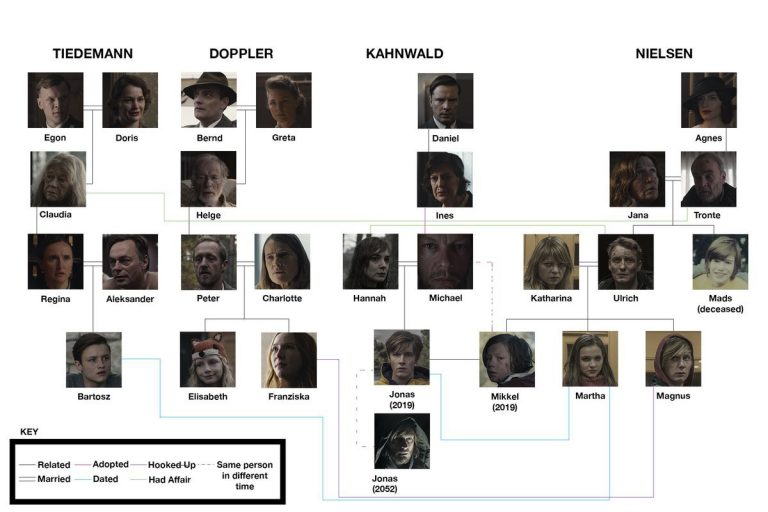

Familias
Teniendo lugar principalmente en 2019, la primera temporada también incluye historias en 1986 y 1953, con varios personajes principales retratados en varios años por múltiples actores.
Árbol familiar
Reparto
| Personaje\Año | Año 1953 | Año 1986 | Año 2019 | Año 2052 |
|---|---|---|---|---|
| Ulrich | - | Ludger Bökerlmann | Oliver Masucci | - |
| Katharina | - | Nele Trebs | Jördis Triebel | - |
| Martha | - | - | Lisa Vicari | - |
| Magnus | - | - | Moritz Jahn | - |
| Mikkel | - | - | Daan Lennard Liebrenz | - |
| Mads | - | Valentin Oppermann | - | - |
| Tronte | Joshio Marlon | Felix Kramer | Walter Kreye | - |
| Jana | Rike Sindler | Anne Lebinsky | Tatja Seibt | - |
| Agnes | Antje Traue | - | - | - |
| Personaje\Año | Año 1953 | Año 1986 | Año 2019 | Año 2052 |
|---|---|---|---|---|
| Jonas | - | - | Louis Holfmann | Andreas Pietschmann |
| Michael | - | Daan Lennard Liebrenz | Sebastian Rudolph | - |
| Hannah | - | Ella Lee | Maja Schöne | - |
| Ines | Lena Urzendowsky | Anne Ratte-Polle | Angela Winkler | - |
| Daniel | Florian Panzner | - | - | - |
| Personaje\Año | Año 1953 | Año 1986 | Año 2019 | Año 2052 |
|---|---|---|---|---|
| Franziska | - | - | Gina Stiebitz | - |
| Elisabeth | - | - | Carlotta von Falkenhayn | - |
| Peter | - | - | Stephan Kampwirth | - |
| Charlotte | - | Stephanie Amarell | Karoline Eichhorn | - |
| Helge | Anatole Taubman | Michael Mendi | - | - |
| Greta | Cordelia Wege | - | - |
| Personaje\Año | Año 1953 | Año 1986 | Año 2019 | Año 2052 |
|---|---|---|---|---|
| Bartosz | - | - | Paul Lux | - |
| Regina | - | Lydia Makrides | Deborah Kauffmann | - |
| Alexander | - | Béla Gabor Lenz | Peter Benedict | - |
| Claudia | Gwendolyn Göbel | Julika Jenkins | Lisa Kreuzer | - |
| Egon | Sebastian Hülk | Christian Pätzold | - | - |
| Doris | Luise Heyer | - | - | - |